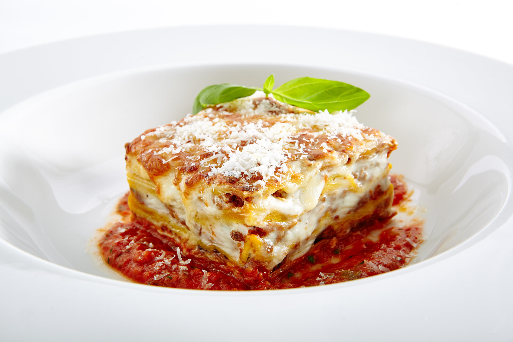

Lasagna

Description
Lasagna is a great food iteam for anyone who likes a good meal. Lasagna
isnt a very hard to make food. However, it takes a little time and a little
money investment on your part to get good ingredients, so lets get right into it.
Ingredients
- 1 pound sweet Italian sausage
- 3/4 pound lean ground beef
- 1/3 cup minced onion
- 2 cloves garlic, crushed
- 1 (28 ounce) can crushed tomatoes
- 2 (6 ounce) cans tomato paste
- 2 (6.5 ounce) cans canned tomato sauce
- ½ cup water
- 2 tablespoons white sugar
- 1(1/2) teaspoons dried basil leaves
- 1/2 teaspoon fennel seeds
- 1 teaspoon Italian seasoning
- 1½ teaspoons salt, divided, or to taste
- ¼ teaspoon ground black pepper
- 4 tablespoons chopped fresh parsley
- 12 lasagna noodles
- 16 ounces ricotta cheese
- 1 egg
- ¾ pound mozzarella cheese, sliced
- ¾ cup grated Parmesan cheese